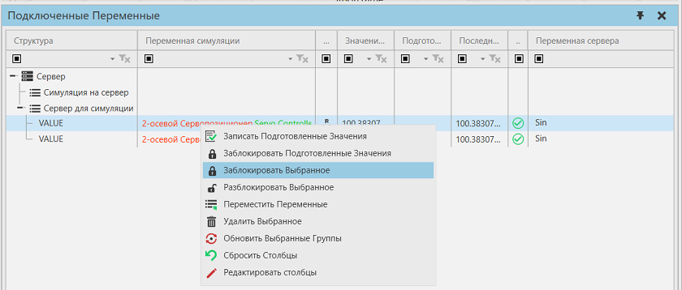

Блокировка значений переменных |
|
Блокировка позволяет установить фиксированные значения для пар переменных. Фиксированное или заблокированное значение используется, когда исходная и целевая переменные в паре синхронизируются друг с другом. Значения переменных моделирования и сервера в паре могут изменяться во время симуляции, но когда они синхронизируются друг с другом, для обновления переменной назначения используется фиксированное значение, а не значение исходной переменной. Это полезно для ручного тестирования сценариев и определенных значений сигналов управления. Например, вы можете протестировать и симулировать результат отказа датчика, а также условия, при которых двигатель никогда не выключается. Обратите внимание, что вы можете блокировать и разблокировать значения во время симулирования.  Чтобы заблокировать/разблокировать значение: 1.Выберите пары переменных, которые вы хотите заблокировать. 2.Щелкните правой кнопкой мыши, а затем сделайте одно из следующих действий: ·Чтобы заблокировать значение, нажмите Заблокировать выбранное. Значение переменной симуляции используется как фиксированное значение. ·Чтобы разблокировать значение, нажмите Разблокировать выбранное. Это означает, что значение исходной переменной используется для обновления целевой переменной. ·Чтобы заблокировать с помощью подготовленного значения, нажмите Заблокировать подготовленные значения. Это означает, что значение в столбце Подготовленное значение используется как фиксированное значение. Как правило, это используется для установки значения переменной, которая постоянно изменяется. Чтобы отредактировать подготовленное значение: 1.Дважды щелкните ячейку в столбце «Подготовленное значение». 2.Введите значение. Если тип переменной — Boolean, щелкните ячейку, чтобы установить значение true или false. 3.При необходимости повторите шаги 1 и 2 для других пар переменных. 4.Щелкните правой кнопкой мыши и выберите Записать подготовленные значения . Затем значения в столбце «Подготовленное значение» назначаются переменным симуляции. |